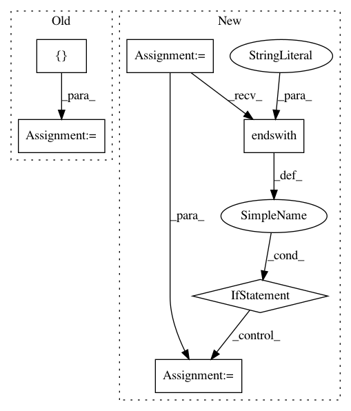

0cd42478586c9cb1febb6b76eea068aac8869a1e,sacred/ingredient.py,Ingredient,__init__,#Ingredient#Any#Any#Any#Any#,38
Before Change
self.named_configs = dict()
self.ingredients = list(ingredients)
self.logger = None
self.captured_functions = []
self.post_run_hooks = []
self.pre_run_hooks = []
self._is_traversing = False
self.commands = OrderedDict()
After Change
Decorator to turn a function into a captured function.
The missing arguments of captured functions are automatically filled
from the configuration if possible.
See :ref:`captured_functions` for more information.
If a ``prefix`` is specified, the search for suitable
entries is performed in the corresponding subtree of the configuration.
if function in self.captured_functions:
return function
In pattern: SUPERPATTERN
Frequency: 3
Non-data size: 6
Instances
Project Name: IDSIA/sacred
Commit Name: 0cd42478586c9cb1febb6b76eea068aac8869a1e
Time: 2018-01-24
Author: dismaldenizen@gmail.com
File Name: sacred/ingredient.py
Class Name: Ingredient
Method Name: __init__
Project Name: mynlp/ccg2lambda
Commit Name: 66a06524eba0b22d14204baeb2ca6d4c9db7d1d0
Time: 2017-05-12
Author: pascual@nii.ac.jp
File Name: scripts/semantic_types.py
Class Name:
Method Name: convert_coq_to_nltk_type
Project Name: ray-project/ray
Commit Name: 96cc7897f728c72f451c42e7c1393d73ed5dcd01
Time: 2021-04-02
Author: ed.nmi.oakes@gmail.com
File Name: python/ray/serve/controller.py
Class Name: ServeController
Method Name: deploy